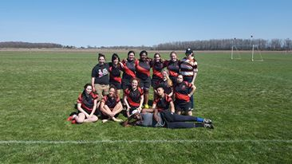

My name is Rachel Baumgarten. I grew up in Saratoga County, NY, and went to Miss Hall's School in Pittsfield, MA.
While at Miss Hall's School, I participated in Varsity Softball, the winter Musicals, JV Soccer, Science Bowl, Debate Club, Rock Band, Jazz Band and Vocal Ensemble. I also spent my Thursdays during Horizons participating in the Personal Authority and Leadership Seminar (PAaLS) by creating a documentary called "A Seat at the Table" where we interviewed women leaders. Please feel free to read more about that on my Projects page.
I now attend the Rochester Institute of Technology. I am majoring in Biomedical Engineering and will declare a minor in Spanish and Computer Science. I have been an active member of the Women's Rugby Football Club, Mental Graffiti (Slam Poety Collective) and Photo House (a special interest housing option). At the moment I am the treasurer for Rugby and Mental Graffiti.
Currently I am on co-op, working for Girls Who Code as a Teacher's assistant for the BSA classroom at the Georgetown School for Continuing Studies. We teach rising 11th and 12th graders how to code with Scratch, Python, C++/Arduino, HTML/CSS and JavaScript in a 7 week intensive program. The first 5 weks are instructional followed by a 2 week hackathon. To learn more about this amazing organization visit Girls Who Code Summer Immersion Program
 I am a proud mother of an adorable cat named Lucy, who sadly stays at home while I am away at school. I am a lover of all things food, and enjoy playing around with colored LEDs and music to make my space. I play piano and flute, and enjoy playing mostly classical music, jazz standards and Adele.
I am a proud mother of an adorable cat named Lucy, who sadly stays at home while I am away at school. I am a lover of all things food, and enjoy playing around with colored LEDs and music to make my space. I play piano and flute, and enjoy playing mostly classical music, jazz standards and Adele.
I have traveled to Paris, London, the Dominican Republic, Costa Rica, Dublin and Barcelona. My life-long dream is to travel the world and soak up all it has to offer from food to culture. That, and also to finally become fluent in Spanish (I hope these goals feed into each other). Please feel free to explore my travels and photography on my Personal page.